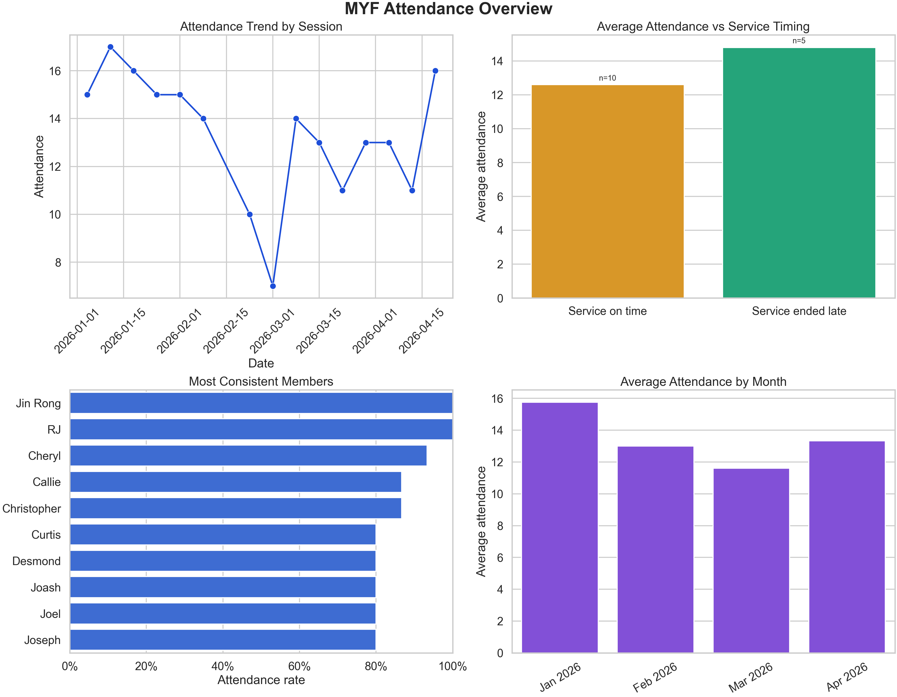
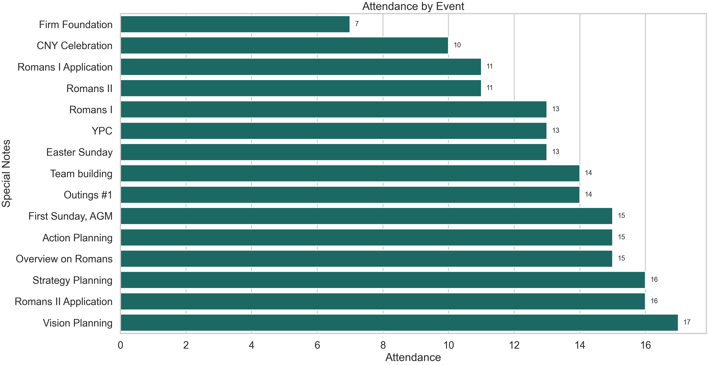
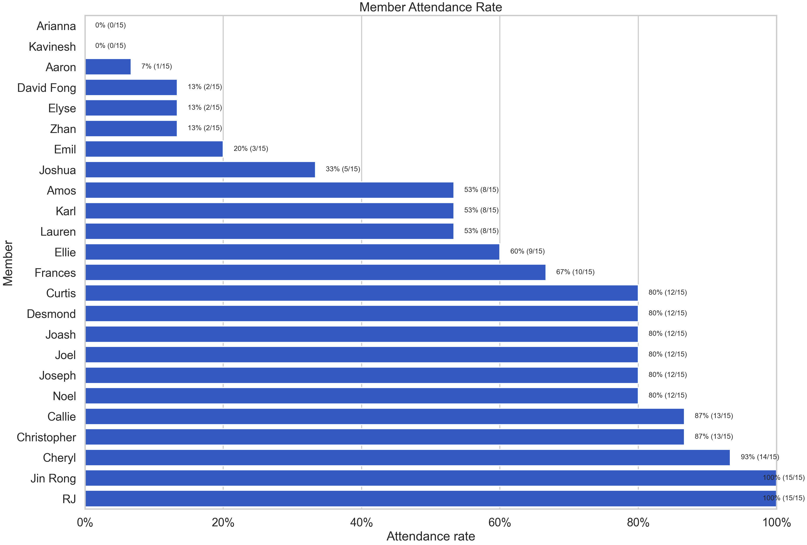
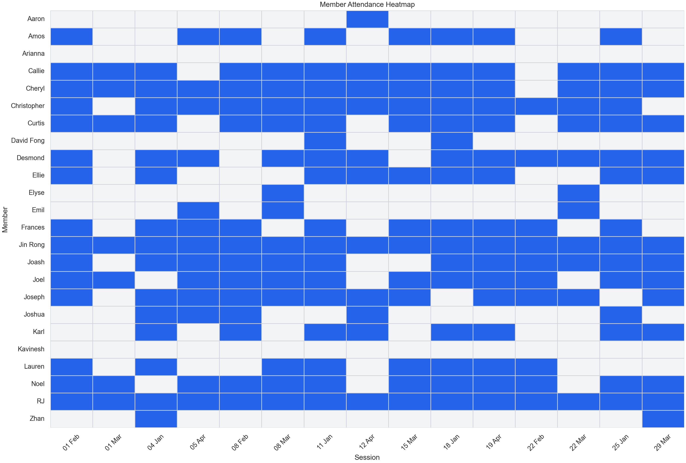
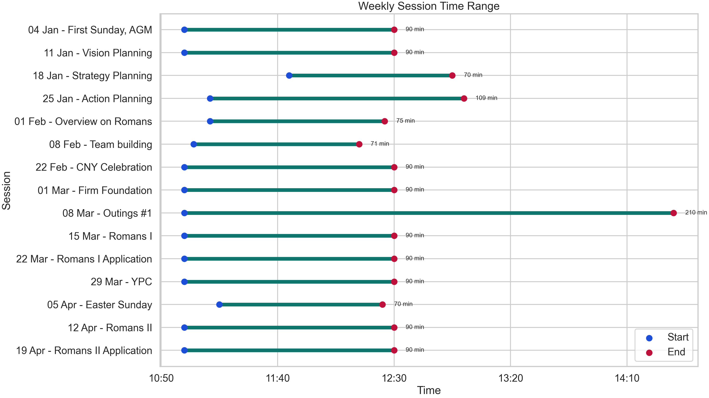
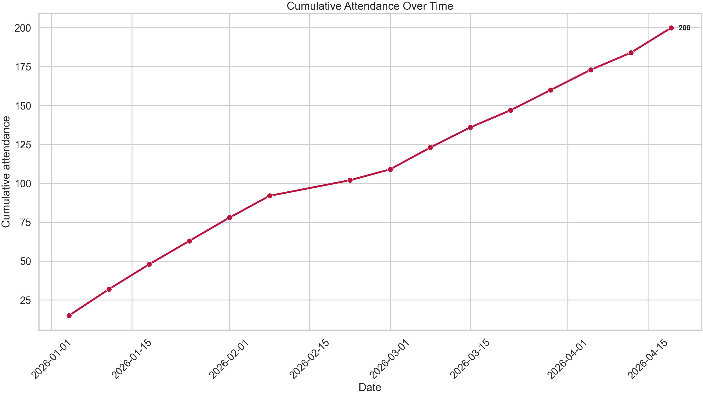

MYF Infographic
MYF attendance at a glance.
This page turns the generated attendance analysis into a single visual story for the 15 completed MYF sessions between 04 Jan 2026 and 19 Apr 2026.
Analysis start: 04 Jan 2026 Analysis end: 19 Apr 2026 Date generated: 20 Apr 2026
Peak turnout
17 11 Jan 2026On-time service average
12.6 10 sessionsLate service average
14.8 5 sessionsOpening to latest session
+1 15 to 16Attendance story
Three signals stand out.
The biggest turnout, the weakest week, and the strongest month frame the overall pattern.
Peak session
17 attended
11 Jan 2026 • Vision Planning
Lowest turnout
7 attended
01 Mar 2026 • Firm Foundation
Strongest month
15.8 average
January 2026 across 4 sessions
Operational insight
Late services coincided with stronger turnout.
+2.2 attendance difference
Sessions that started after a late service averaged 14.8 attendees, compared with 12.6 when service ended on time. This is descriptive rather than causal, but it is the clearest split in the current dataset.
Generated visuals
Chart wall
Various Analysis Charts.





